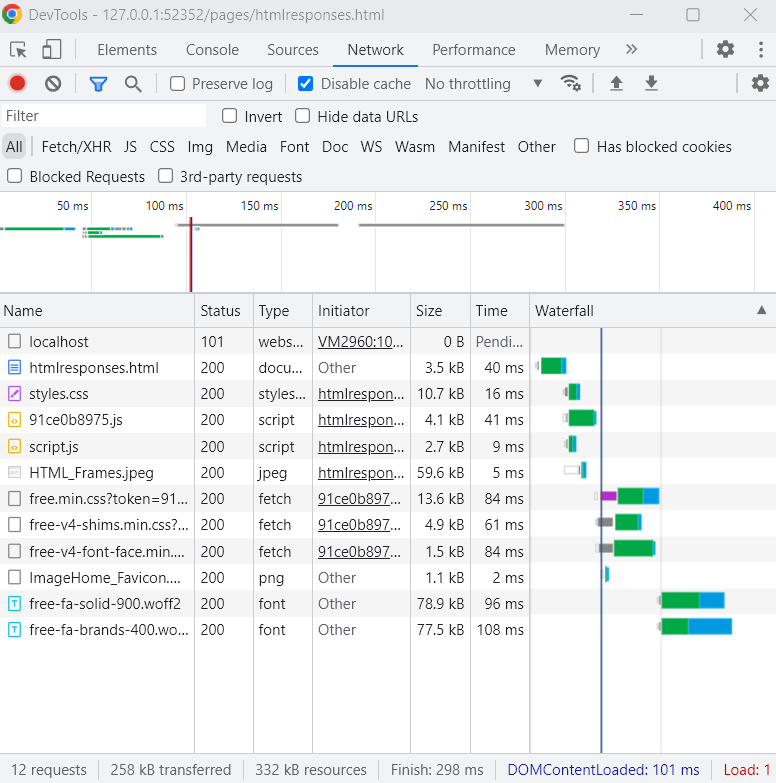

TRY: Viewing HTML Frames
View statuses of your web page parts in the browser's developer tools --> Network tab
You'll likely need more information pertaining to which status code is given. Starting information can be found at MDN Web Docs
